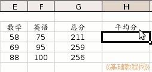
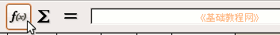
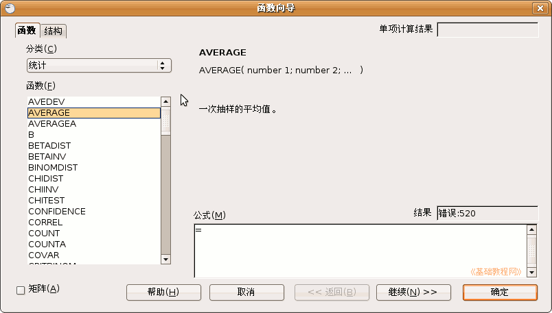
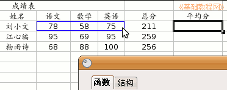
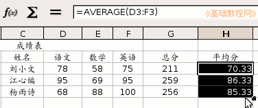

OpenOffice.org 教程之 Calc 电子表格
作者：TeliuTe 来源：基础教程网
八、求平均值 返回目录 下一课上一课我们学习了手工输入公式的方法，对于比较复杂的运算，我们可以用函数来完成，下面我们来看一个练习； 1、启动Calc
1）点击点菜单“应用程序－办公－OpenOffice.org 电子表格”；
2）点菜单“文件－打开”命令，在自己的文件夹中找到上次保存的“成绩表”文件，打开它；
2、输入公式
1）在总分的旁边输入“平均分”，然后把格式设置好；

2）选中下面的单元格，在上边的编辑栏上，找到输入行左边的“f(x)”，点一下；

3）在出来的“函数向导”面板中，在左上角的分类里点“全部”，选择“统计”，再在下面找到AVERAGE点一下选中，
然后点右下角的“继续”，AVERAGE是平均值函数；

4）接下来出来的是数据区域，拖动平均值面板的标题栏，把面板往下移开一些，
在表格中拖动选中从“78”到“75”的三个单元格，对三门成绩进行平均分；

5）检查一下数据区域框正确后，点击“确定”，然后单元格中就出现了平均分，
拖动填充手柄，把下面两个单元格也输入平均值函数；

保存一下文件；
本节学习了在Calc中求平均分的基本操作，如果你成功地完成了练习，请继续学习下一课内容；
本教程由86团学校TeliuTe制作|著作权所有
基础教程网：http://teliute.org
美丽的校园……
转载和引用本站内容，请保留版权信息和本站链接。